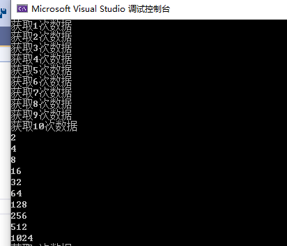
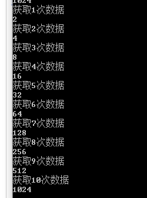
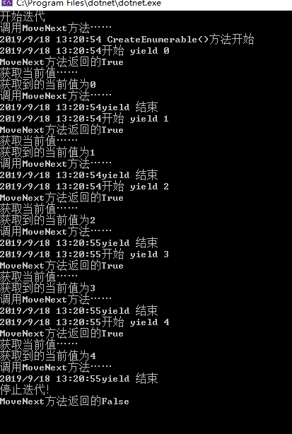

lambda演变历史
.NetFramework1.0 1.1下，lambda表达式是这样去写的，首先声明一个无参无返回值delegate委托，再声明一个无参无返回值的方法，把这个方法当做参数一样传递给委托
public delegate void NoReturnNoPara();
NoReturnNoPara method = new NoReturnNoPara(this.DoNothing);
private void DoNothing()
{
Console.WriteLine("This is DoNothing");
}你也可以声明一个有参数和有返回值的委托，就像声明方法一样：
public delegate void NoReturnWithPara(int x, string y);//1 声明委托
NoReturnWithPara method = new NoReturnWithPara(this.Study);
private void Study(int id, string name)
{
Console.WriteLine($"{id} {name} 学习lambda表达式");
}
//method.Invoke(123, "strPram");
method(123,"strParm");//这两种调用方式是等效的.NetFramework2.0 匿名方法，delegate关键字，可以访问局部变量
NoReturnWithPara method = new NoReturnWithPara(delegate (int id, string name)
{
Console.WriteLine(i);
});
method.Invoke(234, "bingle");.NetFramework3.0 把delegate关键字去掉，增加了一个箭头goes to，lambda表达式 参数列表=>方法体
NoReturnWithPara method = new NoReturnWithPara(
(int id, string name) =>
{
Console.WriteLine($"id:{id},name: {name}");
});
method.Invoke(123, "bingle");省略参数类型，编译器的语法糖，虽然没写，编译时还是有的，根据委托推算
NoReturnWithPara method = new NoReturnWithPara(
(id, name) =>
{
Console.WriteLine($"id:{id}name: {name}");
});
method.Invoke(123, "bingle");如果方法体只有一行，可以去掉大括号和分号
NoReturnWithPara method = new NoReturnWithPara(
(id, name) => Console.WriteLine($"id:{id},name: {name} "));
method.Invoke(123, "bingle");new NoReturnWithPara可以省掉，也是语法糖，编译器自动加上
NoReturnWithPara method = (id, name) => Console.WriteLine($"id:{id} ,name:{name}");
method.Invoke(123, "bingle"); lambda是什么？
lambda只是实例化委托，是匿名方法，但是在编译的时候会分配一个名字，还会产生一个私有sealed类，这里增加一个方法
lambda在多播委托
NoReturnWithPara method = new NoReturnWithPara(this.Study);
method += this.Study;
method += (id, name) => Console.WriteLine($"{id} {name}");
method -= this.Study;
method -= (id, name) => Console.WriteLine($"{id} {name} ");
//多播委托里面的lambda无法移除， 不是2个实例，其实是2个不同的方法
method.Invoke(345, "bingle");匿名方法或者lambda表达式是不是只能是无返回值的？不是的，可以有返回值的。这里面的Action和Func是内置的委托
Action action0 = () => { };
Action<string> action1 = s => Console.WriteLine(s); //参数只有一个 可以省略小括号
Func<int> func0 = () => DateTime.Now.Month;//如果方法体只有一行，去掉大括号分号return
int iResult = func0.Invoke();yield关键字：
含有yield的函数说明它是一个生成器，而不是普通的函数。当程序运行到yield这一行时，该函数会返回值，并保存当前域的所有变量状态。
等到该函数下一次被调用时，会从上一次中断的地方开始执行，一直遇到下一个yield，程序返回值，并在此保存当前状态；如此反复，直到函数正常执行完成。
迭代器模式是设计模式中行为模式的一个例子，他是一种简化对象间通讯的模式，也是一种非常容易理解和使用的模式。
简单来说，迭代器模式使得你能够获取到序列中的所有元素，而不用关心器类型是array，list，linked或者其他的什么序列结构。
这一点使得能够非常高效的构建数据处理通道（data pipeline），即数据能够进入处理通道，进行一系列的变换，或者过滤，然后得到结果。事实上，这正是Linq的核心模式。
在.NET中，迭代器模式被IEnumerator和IEnumerable及其对应的泛型接口所封装。如果一个类实现了IEnumerable接口，那么就能够被迭代。
调用GetEnumerator方法将返回IEnumerator接口的实现，它就是迭代器本身。迭代器类似数据库中的游标，它是数据序列中的一个位置记录。
迭代器只能向前移动，同一个数据序列中跨域有多个迭代器同时对数据进行操作。
一个普通的获取数据的方法：
public IEnumerable<int> CommonMethod()
{
List<int> results = new List<int>();
int counter = 0;
int result = 1;
while (counter++ < 10)
{
Thread.Sleep(1000);
Console.WriteLine($"获取{counter}次数据");
result = result * 2;
results.Add(result);
}
return results;
}yield获取数据：
public IEnumerable<int> YieldMethod()
{
int counter = 0;
int result = 1;
while (counter++ < 10)
{
Thread.Sleep(1000);
Console.WriteLine($"获取{counter}次数据");
result = result * 2;
yield return result;
}
}这两个方法，可以通过调试看到他们之间的区别
这是普通方法获取数据的调试结果：

这是yield方法调试获得的结果：

public IEnumerable<int> CreateEnumerable()
{
try
{
Console.WriteLine("{0} CreateEnumerable()方法开始", DateTime.Now);
for (int i = 0; i < 5; i++)
{
Console.WriteLine("{0}开始 yield {1}", DateTime.Now, i);
yield return i;
Console.WriteLine("{0}yield 结束", DateTime.Now);
if (i == 4)
{
yield break;//直接终结迭代 4会出现的，，
}
}
Console.WriteLine("{0} Yielding最后一个值", DateTime.Now);
yield return -1;
Console.WriteLine("{0} CreateEnumerable()方法结束", DateTime.Now);
}
finally
{
Console.WriteLine("停止迭代！");
}
}
IEnumerable<int> iterable = new Test().CreateEnumerable();//1 不会直接执行
IEnumerator<int> iterator = iterable.GetEnumerator();
Console.WriteLine("开始迭代");
while (true)
{
Console.WriteLine("调用MoveNext方法……");
Boolean result = iterator.MoveNext();//2 正式开启CreateEnumerable
Console.WriteLine("MoveNext方法返回的{0}", result);
if (!result)
{
break;
}
Console.WriteLine("获取当前值……");
Console.WriteLine("获取到的当前值为{0}", iterator.Current);
}
这是调试获得的结果：
